|
Roda JC - NEC (1-0) 4 december 2002 |
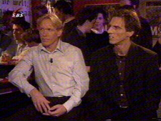
SBS6 besteedde veel aandacht aan de wedstrijd
van vanavond. De Herjot werd omgebouwd tot
voetbalcafé waar Eric van der Luer namens Roda
en Anton Janssen namens NEC te gast waren.
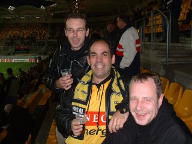
Vanavond waren alleen de echte supporters
aanwezig en dat waren er nog geen 3.000! Hier
een Hanebrett-delegatie met op de achtergrond
de 50 meegereisde NEC-supporters.
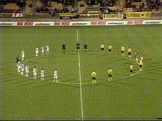
Voor de wedstrijd werd een minuut stilte in acht
genomen voor dhr. Leon Paffen die bij de 1000e
wedstrijd aan een hartstilstand overleed.
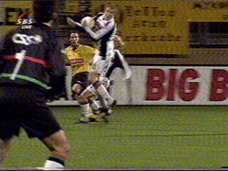
Een niet bestrafte handsbal....
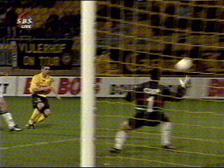
Prima kans voor Soetaers.
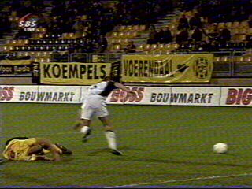
Cristiano wordt opzij gezet: penalty!
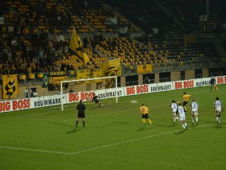
Anastousiou schiet te slap in waarna Gentenaar
de goede hoek kan kiezen (64').
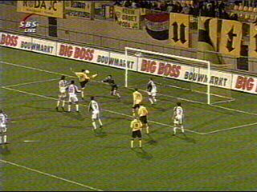
Er werd volop "geschaakt" maar toch waren er
vrij veel kansen over en weer. De meeste waren
voor Roda, de beste voor NEC. Hier maait Ioannis
over de bal.
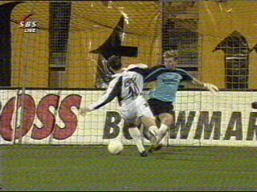
Vlak voor het einde van de tweede helft deze
superkans voor NEC.
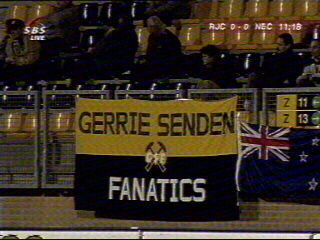
Yep, Gerrie was erbij vanavond (ingevallen voor
de licht geblesseerde Sonkaya).
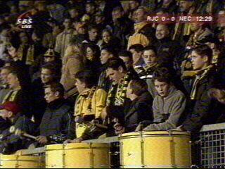
Koffieboer, aanvoerder Slagerij Van Kampen.
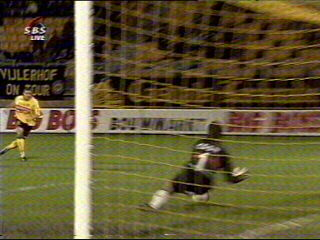
In de 23e min. van de verlenging scoort Soetaers
de GOLDEN GOAL. Het voorbereidende werk
kwam van Nygaard.
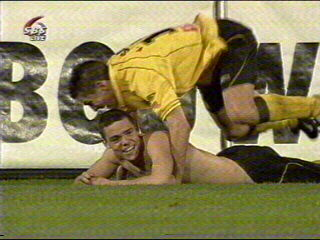
Kamasutra verbleekt hierbij ;-)
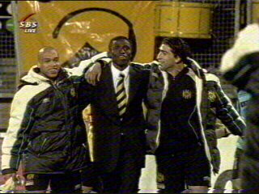
Het vrolijke trio Cristiano, Sonko, Sonkaya.
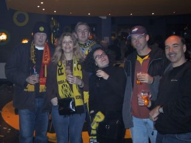
Patje uit Oelegem was namens onze bevriende
club KV Mechelen naar K-town gekomen!
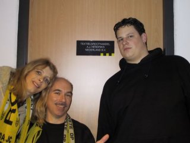
Graag hadden we nog een biertje met dhr. Hendriks
gedronken, maar zijn skybox was helaas gesloten.
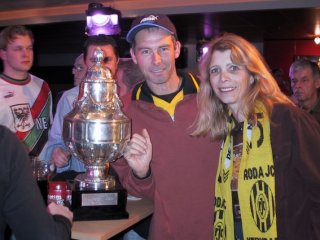
Patje zonder Melleke, maar met Amstelcup.
Patje zonder Melleke, maar met Amstelcup.
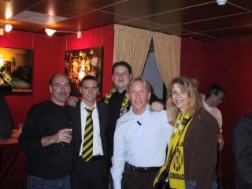
De matchwinnaar en good old Eric!
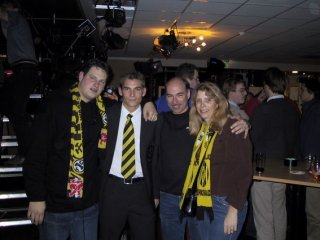
Kevin van Dessel. Eindelijk niet gestalkt door
Vero ;-)
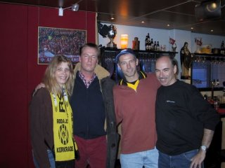
SBS6-presentator Edward van Cuilenborg.
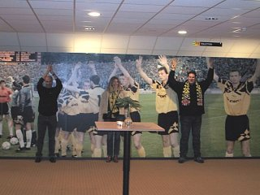
Cupfighters!
Special thanx to: Ray Weijers en Patje voor het
beschikbaar stellen van de foto's.